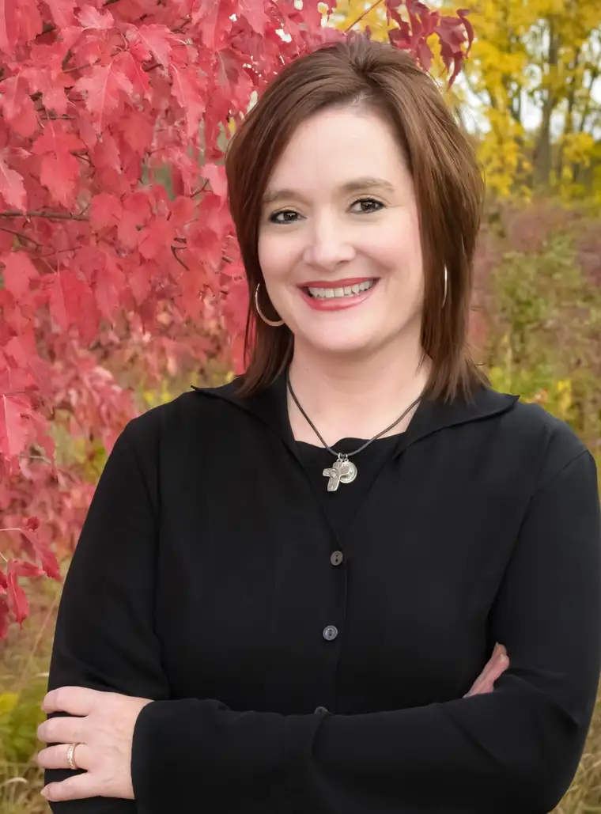

In seventh-grade science class, we sealed our friendship. As the teacher discussed the periodic table of elements, I quickly glanced at the note from my closest comrade, smiling at the ending: “Your BFF.”
Lately, I’ve recalled this Best Friends Forever motif in observing the tight relationship between North Dakota State University and Planned Parenthood. Their back-and-forth notes also seem sealed with a forever alliance.
Despite controversy emerging from common sense, the university and abortion giant are in cahoots to offer credit to K-12 teachers for a course promoting “healthy sexuality and relationships” to benefit their students – our children.
Many have spoken up, including Chris Dodson, who challenged The Forum editorial calling 89 state legislators raising concerns “busybody meddlers” who are “making a mockery of academic freedom.”
Dodson, a lawyer who speaks on state public-policy issues affecting the faithful, defended the legislators’ request for more information. Our tax money and children’s futures are at stake, after all.
Linda Thorson, state director for Concerned Women for America, offered a fitting analogy in her letter, asking how taxpayers would feel if North Dakota, which leads the nation in binge and underage drinking, were to partner with Anheuser-Busch to provide training on safe alcohol consumption, then funnel grant money back to its instructors.
The Forum editorial called the legislators’ efforts “an affront to academic freedom” that discourages an exchange of ideas “in robust pursuit of greater understanding,” backing the university’s president, who’d said campus administrators can’t interfere with research that complies with the law.
But I’ll go a step further in defending the public’s right to “meddle” and assert that the only “research” being done here is on our children as subjects of a dangerous experiment.
Let me point to one specific “educational” material used in our very city by Planned Parenthood to “set us aright” regarding sexual education. I urge you to look up the book, “It’s Perfectly Normal.” Do consider reading it in private, however. Anyone with a healthy moral sense will be quickly alarmed.
Better yet, find it on Amazon’s website and watch the “parental discretion” review video. Note the colorful graphics showing sexual positions, cartoon-style to attract our youngest citizens.
Parents and others of good will, allow yourselves all the emotions – sadness, shock, even outrage at what Planned Parenthood really stands for. And then rise boldly to add your rightfully opposing voice to this sad scheme happening at the expense of our young.
As for Planned Parenthood’s supposedly pure intentions, ask yourself, “Would I eat brownies containing doggy doo?” Any good the organization purports to do for children is automatically erased by the children it destroys.
Enough is enough, NDSU. We adamantly urge you to end this toxic friendship before it destroys the credibility and admiration you’ve worked so hard to build.
And parents, don’t be afraid to fight for your children. They’re worth it.
[For the sake of having a repository for my newspaper columns and articles, I reprint them here, with permission, a week after their run date. The preceding ran in The Forum newspaper on June 28, 2019.]